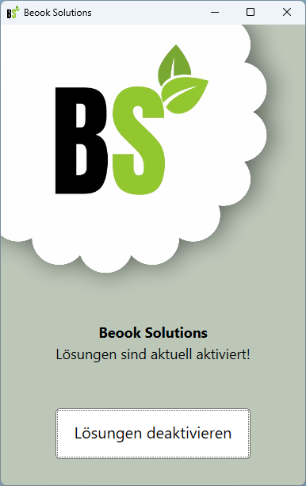

Beook Solutions
Kompatibilität für Beook Version 9.2.0 - 9.3.1.
Download - Windows 10 / 11 (Installer)Ihre Vorteile
Lösungen direkt in Beook
Vereinfachtes Lernen
Benutzerfreundliche Desktop App

Sinn und Zweck
Beook Solutions verfolgt ein klares Ziel:
Lösungen.
Der Werkzeugleiste von Beook wird bei Aktivierung ein neues Symbol hinzugefügt, welche das Einblenden der Musterlösungen ermöglicht.
Die genaue Lösung zu kennen ist sinnvoll um Aufgaben zu korrigieren, oder damit für Prüfungen zu lernen.
Haftungsausschluss
Diese App, „Beook Solutions“, ist ein eigenständiges Produkt und steht in keiner Verbindung zu Ionesoft, dem Herausgeber und Entwickler von Beook. Die Verwendung des Wortes "Beook" impliziert keine offizielle Genehmigung oder Partnerschaft mit Ionesoft.